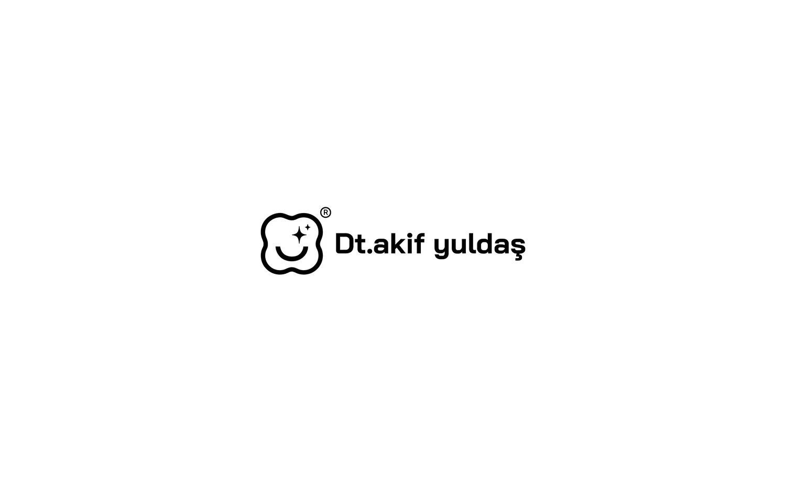
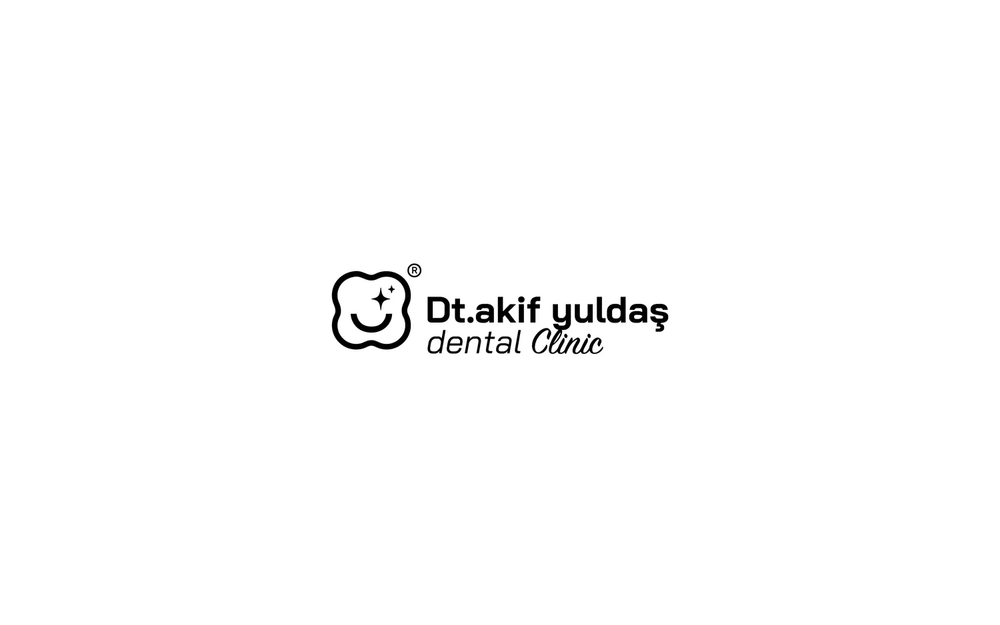
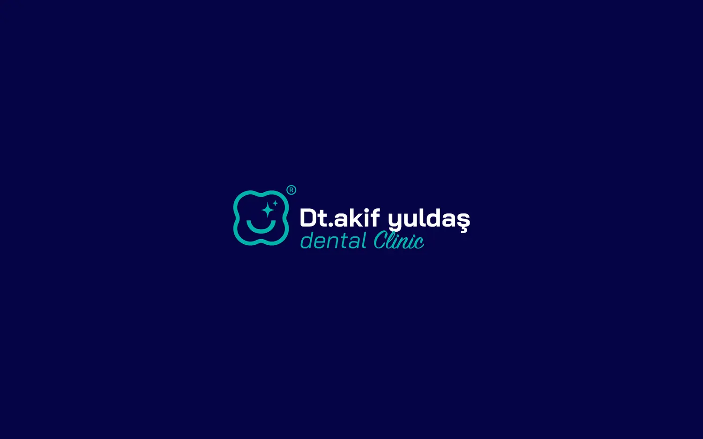
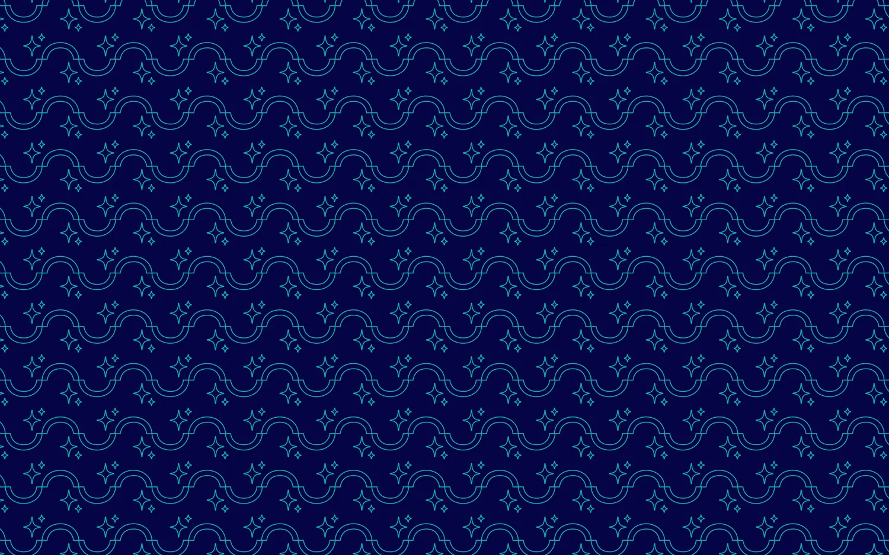
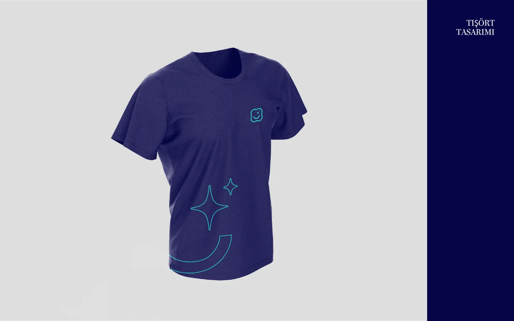
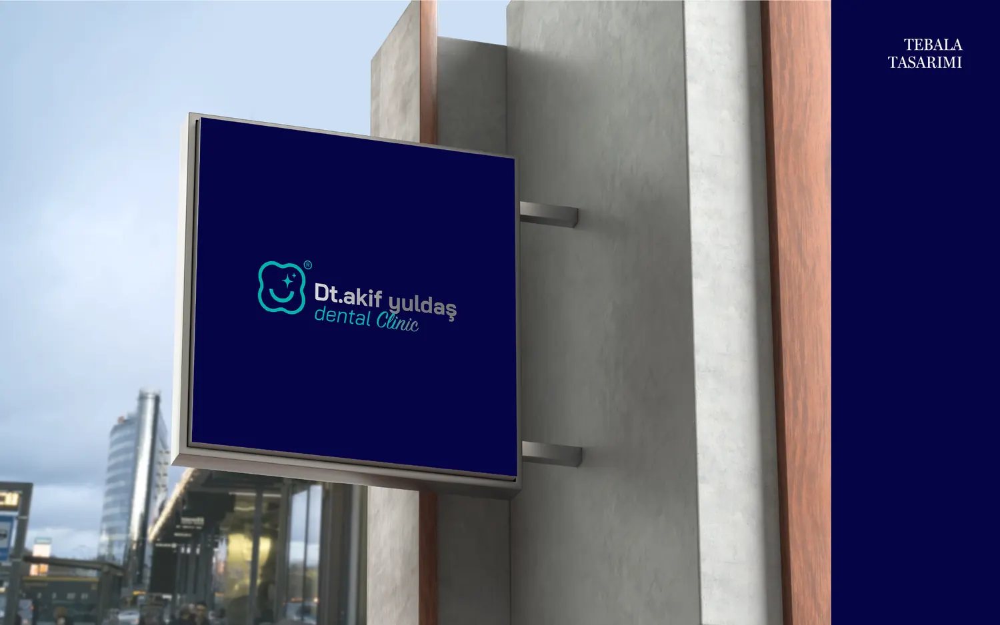
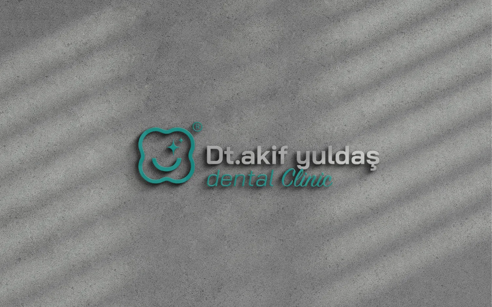
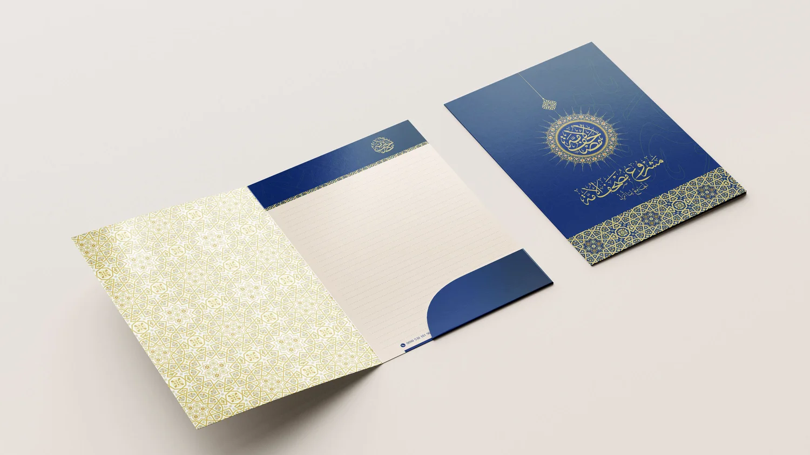

Türkiye
Dt. Akif Yuldaş Dental Clinic
The identity of Dt. Akif Yuldaş’s dental clinic: a smile that cradles a tooth in simplified lines, expressing clarity, authenticity and comfort. In navy and turquoise, with a custom pattern and applications on apparel and signage.
Services Visual Identity
Sector Dental clinic
Country Türkiye Visual Identity Logo Pattern Signage Design

02 Dt. Akif Yuldaş Dental Clinic 
03 Dt. Akif Yuldaş Dental Clinic 
04 Dt. Akif Yuldaş Dental Clinic 05 Dt. Akif Yuldaş Dental Clinic 
06 Dt. Akif Yuldaş Dental Clinic 
07 Dt. Akif Yuldaş Dental Clinic 
08 Dt. Akif Yuldaş Dental Clinic 
09 Dt. Akif Yuldaş Dental Clinic Next project Mushaf Al-Ummah Project 
Home Logos Mushaf Al-Ummah Project Al Omar Law Firm Aldeyafa Ghamer Data Pill Intelligence Project Blue Line Projects Mostafa Abdelrazek Ahmed BEŞLER Khyoot Adilbey Çiftliği MYVET © 2026 Abdullah Hamed. All rights reserved. Cairo — Egypt